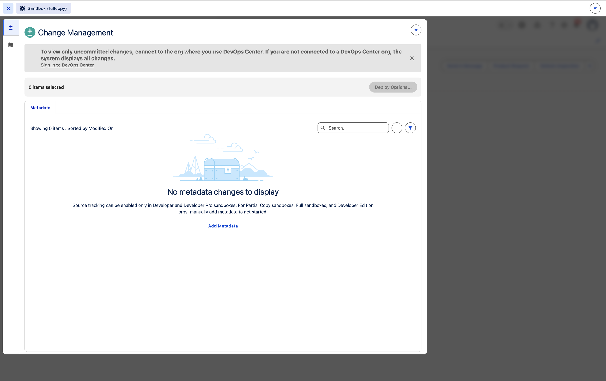
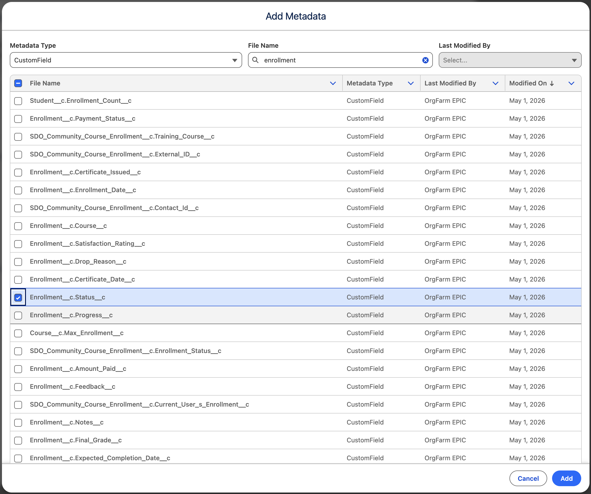
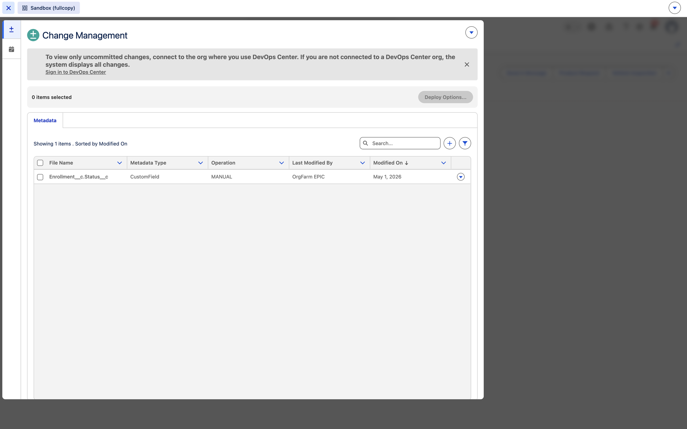
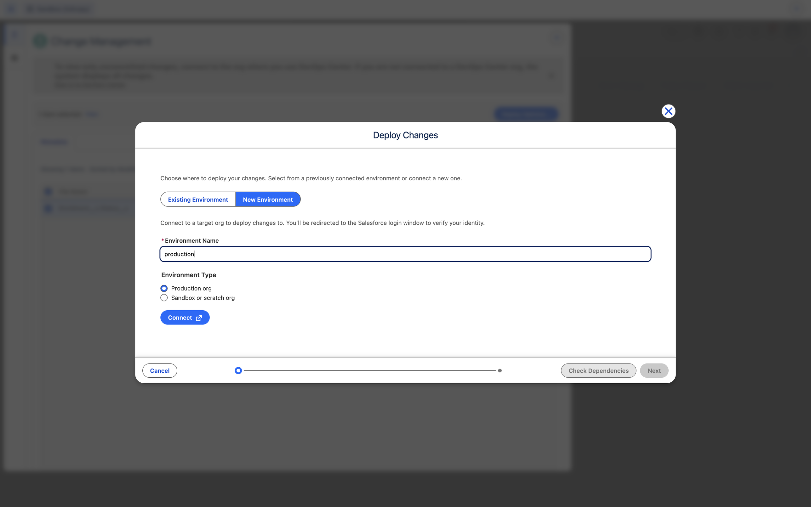
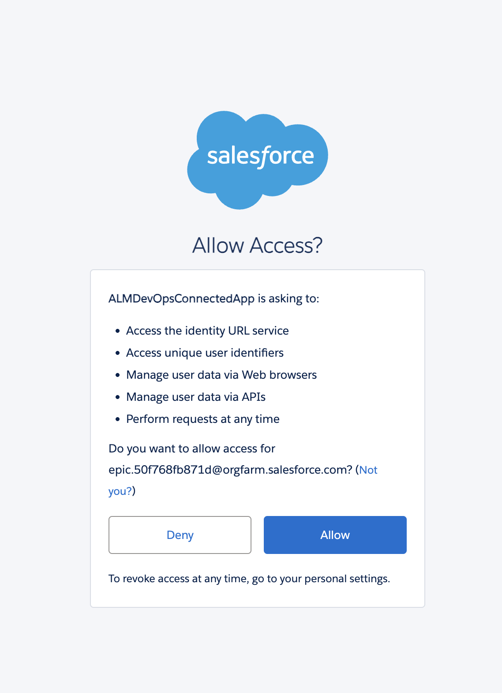
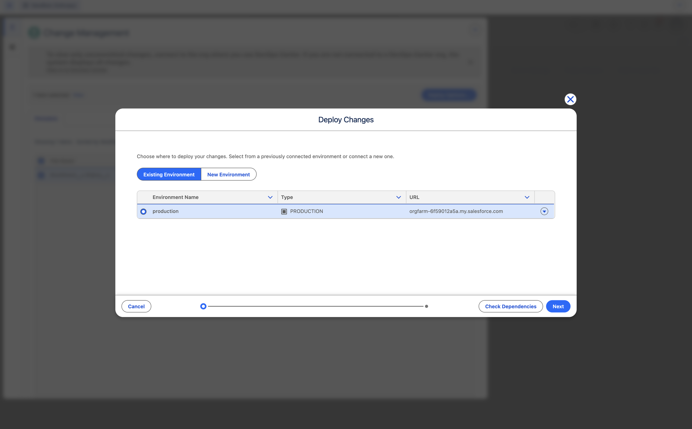
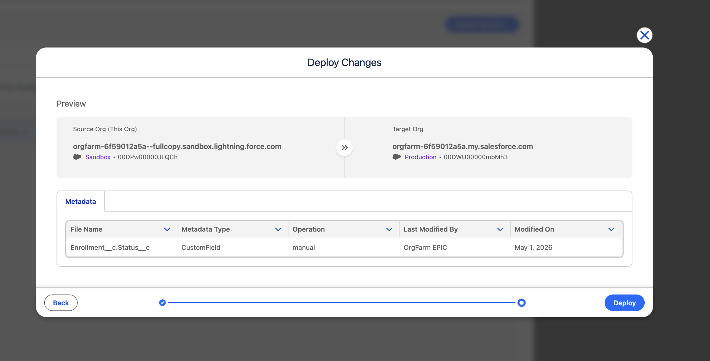

Promote to Production
The Deferred status is live in the sandbox. Now we need to get it into production — safely, with full visibility into what's changing before anything is touched. That's where DX Inspector comes in.
What is DX Inspector?
DX Inspector is a browser-based tool that lets you compare and promote metadata between Salesforce environments. It shows you exactly what's different between your sandbox and production before you deploy anything.
Open Change Management
6 Open Change Management
In your sandbox, click the Sandbox badge in the top-left corner to open DX Inspector (Change Management).

Source tracking only runs automatically in Developer and Developer Pro sandboxes. In a fullcopy sandbox, you add the metadata you want to promote manually — that's the next step.
Add the metadata to track
7 Add the Status field
Click Add Metadata. In the dialog, set Metadata Type to CustomField, type enrollment in the File Name search, then check Enrollment__c.Status__c and click Add.
If the File Name lookup doesn't populate after you choose CustomField, close the dialog and click Add Metadata again.

The Status field now appears in Change Management with operation MANUAL — that's your one item to promote.

Connect to production
8 Connect production (first time only)
Select the Enrollment__c.Status__c row, then click Deploy Options. In the Deploy Changes dialog, click New Environment. Enter production as the Environment Name, leave Production org selected, and click Connect.

You'll be redirected to authenticate — log in with your production org credentials and click Allow.

Back in the Deploy Changes dialog, switch to Existing Environment. The production entry is now listed — select it and click Next.

This production connection is saved. In the Agent Driven path, you'll skip straight to selecting the existing environment instead of going through the Connect flow again.
Review and deploy
9 Preview the diff and deploy
The Preview screen shows the Source Org (your fullcopy sandbox) and the Target Org (production), with the single CustomField listed below: Enrollment__c.Status__c. This is the governance moment — exactly what's changing, nothing more.

Click Deploy. Once the deployment completes, open an Enrollment record in production and confirm Deferred is available in the Status dropdown.
A business request went from conversation to production in under 25 minutes — through a sandbox, reviewed, and promoted with full visibility. No surprises, no shortcuts.
Now let's tackle the bigger ask.